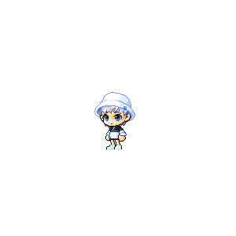
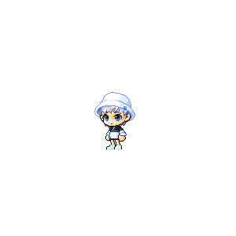

玻璃 / Glass 預設透明玻璃 / Default (B)紅色玻璃 / Red (B)黃色玻璃 / Yellow (B)藍色玻璃 / Sky Blue (B)暗色玻璃 / Dark (A)閃爍的紅色玻璃 / Sparkling Red (A)閃爍的黃色玻璃 / Sparkling Yellow (S)閃爍的藍色玻璃 / Sparkling Sky Blue (S)閃爍的透明玻璃 / Sparkling Transparent (S)閃爍的暗色玻璃 / Sparkling Dark
樹木 / Trees 預設樹木 / Default (B)鬱鬱杜松 / Juniper (B)武陵檀香 / Mu Lung Juniper (B)巨大猢猻樹 / Baobab Tree (B)美味蘋果樹 / Delicious Apple Tree (A)飄逸柳樹 / Willow (A)紫光藍花楹 / Purple Jacaranda (A)楓之谷楓樹 / Maple Tree (S)櫻花處櫻樹 / Elluel Cherry Tree (S)埃羅汀月光樹 / Elodin Moonlight Tree (S)阿爾卡娜精靈樹 / Arcana Spirit Tree
基座 / Bases 隱藏基底 / Hide 預設基底 / Default (B)摩登黑色基底 / Modern Black Base (B)摩登白色基底 / Modern White Base (B)簡單粉紅基底 / Simple Pink Base (B)簡單黃色基底 / Simple Yellow Base (B)簡單天藍基底 / Simple Sky Blue Base (A)朵朵雲朵基底 / Fluffy Cloud Base (A)甜蜜棉花糖基底 / Sweet Marshmallow Base (S)華麗寶石基底 / Fancy Jewel Base (S)古典優雅基底 / Classic Elegant Base (S)古典發條音樂盒基底 / Classic Music Box Spring Base
姿勢 / Pose 預設 / default (B)穩住氣/ Catch Breath (B)坐下 / Sit (B)跳躍 / Jump (B)飛翔 / Fly (B)幽靈 / Ghost
表情 / Expressions 預設 / default (B)哈哈 / Smile (B)嗚嗚 / Cry (B)勃然 / Angry (B)唉咿 / Stunned (B)啊啊 / Troubled (A)炯炯有神 / Googly (A)閃閃發亮 / Sparkling (A)歡呼 / Excited (A)親親 / Smooch (S)出現 / Goo Goo (S)眨眼 / Wink (S)打呼 / ZZZ
椅子 / Chairs 隱藏椅子 / Hide (B)小石頭 / Small Rock (B)小香菇 / Small Mushroom (B)小椅凳 / Small Bench (B)小吊床 / Small Stump (B)露營椅 / Camping Chair (A)小涼蓆 / Small Mat (A)安逸的懶人枕 / Cozy Bean Bag Cushion (A)蓬鬆雲朵椅子 / Soft Cloud Chair (S)玩具噗噗椅子 / Toy Car Chair (S)鞦韆椅子 / Swing Chair
公仔 1 (左) / Mini Figure 1 (L) 隱藏公仔 / Hide (B)迷你菇菇寶貝 / Mini Orange Mushroom (B)迷你緞帶肥肥 / Mini Ribbon Pig (B)迷你企鵝王 / Mini Pepe (B)小那因哈特 / Lil Neinheart (A)小狂狼勇士 / Lil Aran (A)小龍魔導士 / Lil Evan (A)小愛麗西亞 / Lil Alicia (A)小希拉 / Lil Hilla (S)小幻影俠盜 / Lil Phantom (S)小史烏 / Lil Lotus (S)小露希妲 / Lil Lucid
公仔 2 (右) / Mini Figure 2 (R) 隱藏公仔 / Hide (B)迷你綠水靈 / Microslime (B)迷你雪吉拉 / Microyeti (B)迷你皮卡啾 / Mini Pink Bean (B)小凡雷恩 / Lil Von Leon (A)小精靈遊俠 / Lil Mercedes (A)小夜光 / Lil Luminous (A)小隱月 / Lil Shade (S)小梅格耐斯 / Lil Magnus (S)小西格諾斯 / Lil Cygnus (S)小殺人鯨 / Lil Orchid (S)小戴米安/ Lil Damien
特效 / Effects (no gif) 隱藏特效 / Hide (B)小楓葉 / Small Maple Leaf (B)小櫻花瓣 / Small Cherry Petal (B)小樹葉 / Small Leaf (B)黃色月光粉末 / Yellow Moonlight Dust (A)小雪花 / Small Snowflake (A)點點光影 / Bubbly Mote of Light (S)白色星光粉末 / White Starlight Dust (S)灑落的藍色粉末 / Sprinkling Blue Dust (S)五色光影 / Five-Color Mote of Light (S)凍結光線碎片 / Prismatic Light Fragment
背景 / Background 無 / None 純黑 / Black 楓葉 / Maple 天空之城 / Orbis 魔法森林 / Ellinia 玩具城 / Ludibrium 阿爾卡娜 / Arcana 艾斯佩拉 / Esfera 賽拉斯 / Sellas 深淵遠征1 / Abyss 1 深淵遠征2 / Abyss 2 西格諾斯殿堂 / Cygnus Garden 阿里山 / Ali Mountain 時間神殿 / Time Temple 狐狸峽谷 / Fox Valley 童話村 / Korean Folk Town 櫻花處1 / Elluel 1 櫻花處2 / Elluel 2 菇菇神社 / Mushroom Shrine 弓箭手村 / Henesys 無名村 / Nameless Town
背景音樂 / Background Music 無音樂 / None (B)弓箭手村 / Floral Life (B)魔法森林 / When The Morning Comes (B)埃羅汀 / Secret Elodin (B)櫻花處 / Wind And Flower (B)耶雷弗 / Queen's Garden (B)修練森林 / Raindrop Flower (B)天空之城 / Shinin' Harbor (A)舊版登入音樂 / Start the Adventure (Title) (A)西格諾斯殿堂 / Cygnus Garden (A)亞修羅姆 / Asylum (A)殺人鯨內心世界 / Rabbit Dream (A)時間神殿 / Time Temple (A)魔菈斯 / Swamp Of Memory Moras (A)紅線 / Legend Of Zipang (Silence) (A)茱麗伊特 / The Way To Hope (MR) (S)琉德 / Forgotten Names (S)迎月花 / Evening Primrose (S)忘卻之湖 / Lake Of Oblivion (S)阿爾卡娜 / The Tune Of Azure Light (S)艾斯佩拉 / Soup Of Life
 


